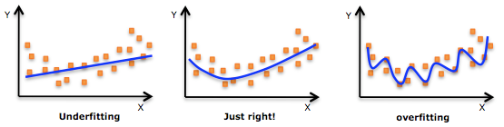
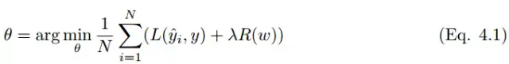
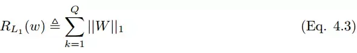
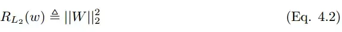

Machine Learning Engineer (Ads) Interview Questions
A Guide to Pass the MLE interview.

1 过拟合
定义：过拟合通常发生在算法学习的输入数据无法反应真实的分布且存在一些噪声的情况。这时算法的方差较大，偏差较小。
1.1 正则化
- 介绍正则化方法
答：增加训练样本、数据增强、L1 正则化、L2 正则化、Dropout、DropConnect 和早停（Early stopping）法。
数据增强
数据增强通过向训练数据添加转换或扰动来人工增加训练数据集。数据增强技术如翻转图像、裁剪、旋转，通常应用在图像分类中。
L1, L2正则化
答：L1 正则化向目标函数添加正则化项，以减少参数的绝对值总和；而 L2 正则化中，添加正则化项的目的在于减少参数平方的总和。 L1 正则化中的很多参数向量是稀疏向量，因为很多模型导致参数趋近于 0，因此它常用于特征选择设置中。而L2正则化会产生比较小的解，较为常用。
  
如果有正则项，则可以增大正则项系数λ
Bagging
答：将多个弱学习器Bagging 一下效果会好很多，比如随机森林等
集成学习策略
答：DNN可以用Bagging的思路来正则化。首先我们要对原始的m个训练样本进行有放回随机采样，构建N组m个样本的数据集，然后分别用这N组数据集去训练我们的DNN。即采用我们的前向传播算法和反向传播算法得到N个DNN模型的W,b参数组合，最后对N个DNN模型的输出用加权平均法或者投票法决定最终输出。不过用集成学习Bagging的方法有一个问题，就是我们的DNN模型本来就比较复杂，参数很多。现在又变成了N个DNN模型，这样参数又增加了N倍，从而导致训练这样的网络要花更加多的时间和空间。因此一般N的个数不能太多，比如5-10个就可以了。
Dropout
答：Bagging 是通过结合多个模型降低泛化误差的技术，主要的做法是分别训练几个不同的模型，然后让所有模型表决测试样例的输出。而 Dropout 可以被认为是集成了大量深层神经网络的 Bagging 方法，因此它提供了一种廉价的 Bagging 集成近似方法。
Dropout 指暂时丢弃一部分神经元及其连接。随机丢弃神经元可以防止过拟合，同时指数级、高效地连接不同网络架构。神经元被丢弃的概率为 1 − p，减少神经元之间的共适应。隐藏层通常以 0.5 的概率丢弃神经元。使用完整网络（每个节点的输出权重为 p）对所有 2^n 个 dropout 神经元的样本平均值进行近似计算。Dropout 显著降低了过拟合，同时通过减少训练节点提高了算法的学习速度。
Drop Connect
答：Drop Connect 是 Dropout 的一般化。在 Drop Connect 的过程中需要将网络架构权重的一个随机选择子集设置为零，取代了在 Dropout 中对每个层随机选择激活函数的子集设置为零的做法。由于每个单元接收来自过去层单元的随机子集的输入，Drop Connect 和 Dropout 都可以获得一定的泛化性能。Drop Connect 和 Dropout 相似的地方在于它涉及在模型中引入稀疏性，不同之处在于它引入的是权重的稀疏性而不是层的输出向量的稀疏性。
早停法（Early Stop）
答: 选择合适的训练次数，避免训练的网络过度拟合训练数据。
交叉检验
答：通过交叉检验得到较优的模型参数。
特征选择
答：减少特征数或使用较少的特征组合，对于按区间离散化的特征，增大划分的区间。
使用传统的dropout在RNN中效果不是很好，因为RNN会有放大噪音的功能，所以该如何在LSTM中使用dropout
dropout、normalazation、激活函数的先后顺序
2 欠拟合
定义：这时算法的方差较小，偏差较大。
2.1 解决方法
1、增加新特征，可以考虑加入进特征组合、高次特征，来增大假设空间; 2、尝试非线性模型，比如核SVM 、决策树、DNN等模型; 3、如果有正则项可以较小正则项参数 \(\lambda\); 4、Boosting, Boosting 往往会有较小的 Bias，比如 Gradient Boosting 等.